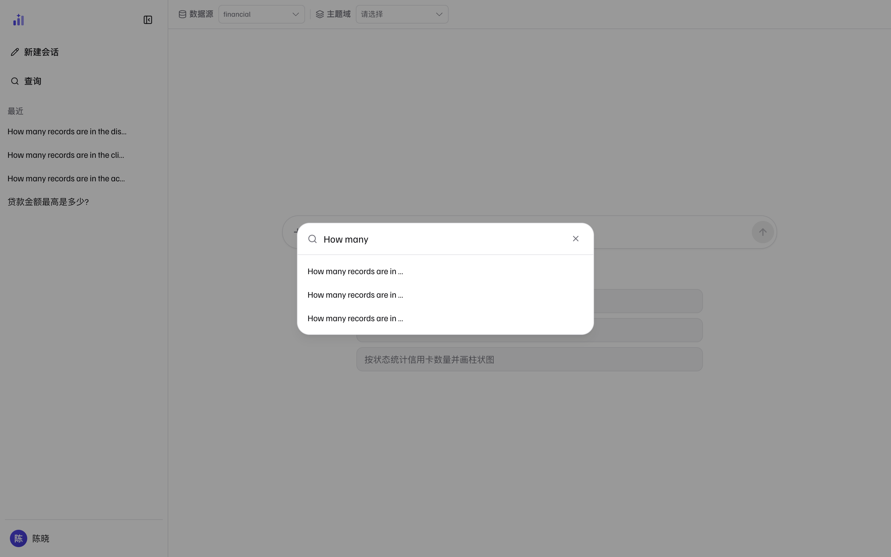
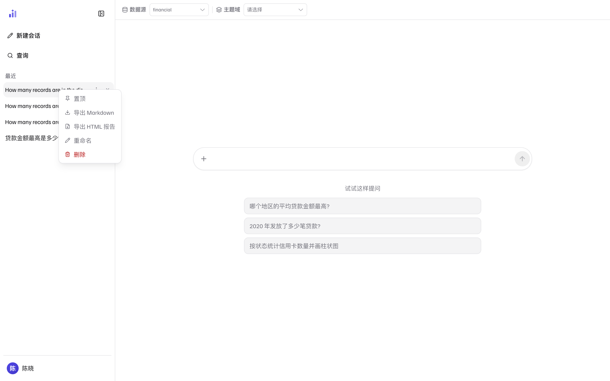

新建会话：什么时候开新的
点侧栏顶部的「新建会话」（界面导览图 2 的 ②） 开一段干净上下文。判断标准很简单：
- 同一个话题的追问——留在原会话。「那按地区拆开呢?」这类问题靠上文的表名、口径、实体指代理解，新开会话它就不知道「那」指的是什么。
- 换话题、换数据源口径——开新会话。省得旧语境把新问题带偏。
- 要干净的起点做对照——开新会话问同一个问题，两次的答案与依据可以逐项比对。
会话标题自动取第一个问题（超出宽度截断显示），所以列表本身就是一份问题清单。
找到历史会话
会话多了以后用侧栏的「查询」（或快捷键，见输入框旁的提示）打开搜索框， 输入关键词即时过滤。

1 2 3- 1查询——侧栏固定的搜索入口，会话再多也不用翻列表。
- 2搜索框——输入即过滤，无需回车；
×或点击空白处关闭。 - 3结果列表——按标题匹配（不搜对话正文）。找不到时换个问题开头里的关键词试试，或直接搜索你记得的那几个字。
重命名与删除
在侧栏把鼠标移到某个会话上，行尾出现 ⋮（菜单）与 ×（快速删除）；
直接右键会话行也能唤出同样的菜单。

1 2 3- 1选中的会话行——右键或悬停
⋮唤出菜单。 - 2重命名——给会话一个自己认得出的名字，比如「Q3 贷款口径核对」。
- 3删除——删除整个会话及其对话记录。
删除不可恢复
删除会话会移除这段对话的历史（含每一轮的答案与出处）。已经沉淀进知识库的内容 （审批通过的示例、教训）不受影响——那些已经属于数据源的知识资产，不属于某个会话。
运行中的中断，和答案的重来
- 中断——提问后发送按钮变为停止按钮。问题明显问错或数据源选错时，早停比等完便宜；中断不影响其他会话。
- 重新生成——每条答案下方的操作行里有「重新生成」（答案解剖图 1 的操作行）：把该轮的提问重跑一遍。对它不满意再重跑一次，或者编辑问题重新问，都是正常用法。
同一会话里的结果复用
在同一会话里问一个已经问过的完全相同的问题，系统直接返回上一轮的结果与依据， 不重新生成——出处条与依据抽屉会如实标注来源档位（复用而非新算）。 这对往返核对特别有用：数字不会因为重跑而漂移。 要一次全新的计算，换一种问法，或到新会话里问。
相关页面
本页截图为真实界面（隔离的演示实例，数据是内置 BIRD 金融演示库）；
可用前端仓库里的 npm run shots 重新生成，_manifest.json 记录每张图的来源提交。